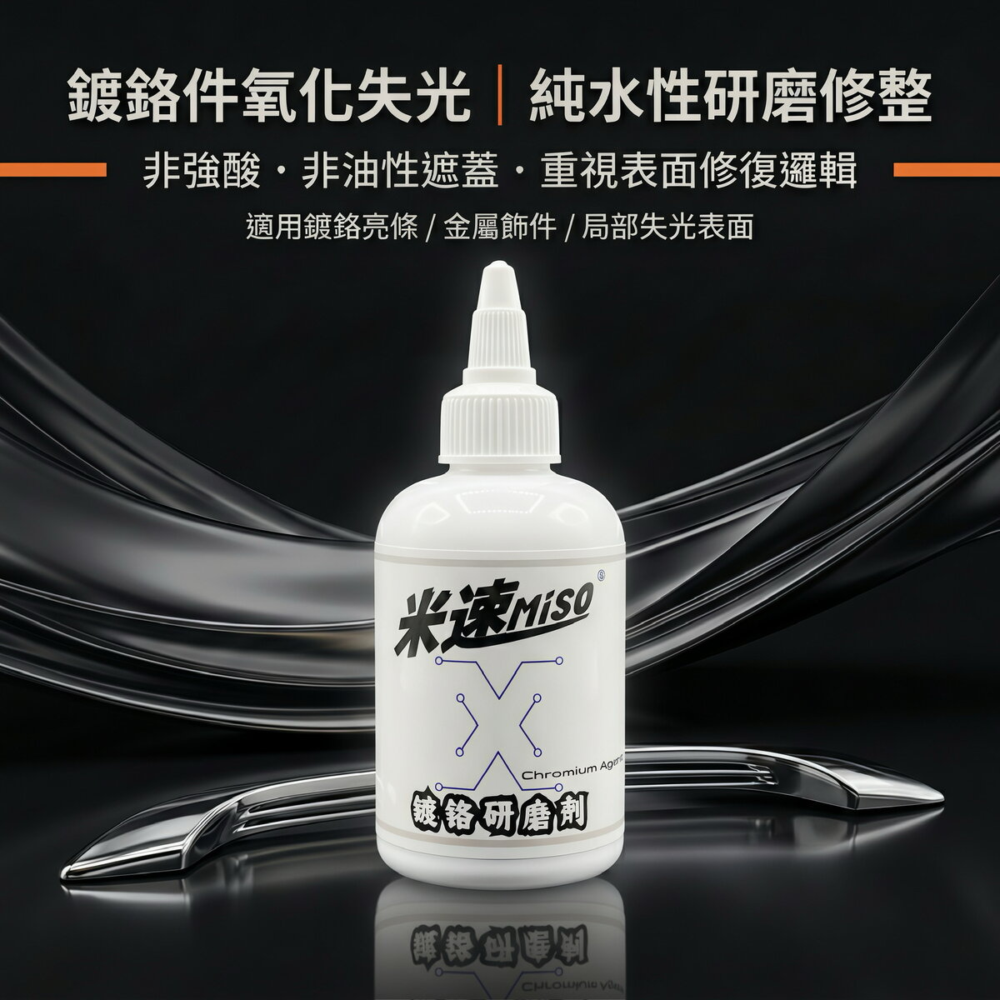

MISO Chrome Polish
A restoration compound made for hard chrome-plated parts. For dulled trim, hazy chrome, and blackened exhaust tips. Not for vacuum-plated or matte chrome.
Add to cart → fill in your details → send your order on WhatsApp; we confirm on WhatsApp whether each item can ship to your country and what shipping costs, then you pay
Product description
Dulled trim, hazy chrome, and blackened exhaust tips are all oxidation and corrosion on the chrome surface. MISO Chrome Polish is an extra-coarse physical restoration compound made for hard chrome substrates. It doesn't contain wax, silicone oil, or optical brighteners, the kind of ingredients that just mask the problem temporarily; it cuts away the oxidation and surface defects physically instead. pH is kept in the near-neutral 6.5-7.5 range, with no strong acids, strong bases, hydrofluoric acid, or chromic anhydride. Be sure to check the list of unsuitable surfaces below before you start.
Specs
- pH
- 6.5-7.5, near-neutral; no strong acids, strong bases, hydrofluoric acid, chromic anhydride (CrO₃), or other corrosive ingredients
- Dilution ratio
- Use undiluted, straight from the bottle
- Compatible surfaces
- Intact hard-chrome parts: car chrome trim, chrome door handles, chrome grilles, chrome wheels, chrome exhaust tips; hard chrome parts anywhere on a motorcycle, chrome trim on retro motorcycles; hard-chrome bathroom faucets and fixtures at home. Unsealed anodized parts only for brightening very light, shallow surface oxidation
- Not for use on
- Vacuum-plated plastic parts, matte chrome, PVD-coated parts, sealed anodized parts; damaged parts where the chrome layer has already peeled, pitted through, or has large-area blistering or rust breaking through to the base metal; anything that isn't chrome, such as paint, glass, rubber, regular plastic, or non-anodized aluminum; chrome items that contact food (tableware, cookware)
- Shelf life
- 2 years unopened; use within 6 months once opened
- Compatible machines
- Dual-action polisher (DA) 1800-2500 OPM (constant-speed mode); rotary polisher (RO) 1200-1800 RPM. Never run at excessive speed.
- What's included
- Comes with one 1-inch detail pad
- Pads to pair with
- Level 2 corrosion or worse needs a variable-speed detail polisher with a dedicated wool felt pad; use the included 1-inch pad for tight spots; level 1, light corrosion, can be done by hand with a short-nap microfiber towel
How to use it
- First thoroughly wash off dust, oil, wax, coating, tar, and bug residue with a neutral degreaser to make sure there's nothing on the surface that would act as a barrier.
- Rinse with a pressure washer, then dry completely with a microfiber towel so there's no water or dust left.
- Test a small amount on a hidden edge, wiping lightly 10-15 times with a towel. Wipe it clean and check for any loss of shine, discoloration, or scratching. Only move on to the full area once nothing looks off.
- How to judge the corrosion level: light dulling, water spots, or a thin layer of surface rust with no visible pitting is level 1, and can be done by hand. Visible oxidation spots, pitting, or shallow rust is level 2 or worse; you must switch to a machine. Never try to hand-treat corrosion beyond level 1.
- Shake well for 2 minutes before use.
- Break in a new wool felt pad before first use: brush off loose fibers, or run it lightly on scrap material for 10 seconds.
- Before machine work, close the vehicle's doors and windows, and mask off surrounding non-chrome surfaces with painter's tape.
- Machine application amount: a soybean- to peanut-sized dot per 10cm x 10cm section.
- Rest the pad flat on the surface before turning the machine on, then move it in a crisscross pattern at a steady speed, 30-60 seconds per small section. Keep the pad flat the whole time; never let the edge tip up.
- Stop working a section as soon as the product dries into a fine powder. Never dry-buff or run the pad with no product on it; that can burn through the chrome layer.
- Tight spots must be done with the included 1-inch pad.
- Wipe off residue and check the result as soon as you finish each small section. If it's not fully gone, repeat once or twice, but never work one spot too long or over-polish it.
- Hand application (level 1 only): shake well, dab a small amount onto a short-nap microfiber towel, and work in circles plus crisscross lines with even pressure, 15-30 wipes per small section.
- Switch to a clean side of the towel as soon as it picks up too much powder. Wipe off residue and check the result; if it's not enough, repeat once or twice. If there's still no real improvement, that's beyond level 1 and you'll need to switch to machine work.
- Finish by rinsing thoroughly with a neutral degreaser and water to make sure no powder residue is left in gaps. After working on wheels or grilles, always pressure-rinse the crevices.
- After the job, we recommend applying a dedicated chrome protectant or an inorganic sealant. For everyday washing, use a neutral car wash soap; never use strong acid or alkaline cleaners, steel wool, or stiff brushes.
- Wash the pad thoroughly with a pressure washer and neutral cleaner after every use, then let it air dry.
Things to know
- Keep out of reach of children and pets. Avoid contact with eyes and mouth.
- If it gets in your eyes, flush with plenty of running water for at least 15 minutes and see a doctor right away if needed.
- Store sealed in a cool, dry place, away from direct sun, high heat, and freezing. Shelf life is 2 years unopened, and 6 months once opened.
- This product contains abrasive mineral powder. Extended contact may irritate sensitive skin, so wear nitrile gloves throughout and wash your hands with water right after the job.
- Never mix this product with other chemicals like strong acids, strong bases, or paint stripper; that can trigger a reaction that produces harmful substances.
- It's normal for the abrasive powder to settle and separate after sitting for a while. Just shake it well before use.
- Work indoors somewhere cool, ventilated, and out of direct sunlight, ideally 15-30°C. Never work in direct heat, rain, or high humidity.
- Before you start, fully mask off surrounding paint, plastic, rubber, glass, and any other non-chrome surfaces with painter's tape.
- Wear nitrile gloves and safety glasses the whole time. For machine work, we also recommend a dust mask.
- Do not use on: vacuum-plated plastic parts, matte chrome, PVD-coated parts, sealed anodized parts, anything that isn't chrome such as paint, glass, rubber, regular plastic, or non-anodized aluminum, or chrome items that contact food.
- Do not use this product on parts where the chrome layer has already worn through to the base metal, or that show blistering, peeling, or pitting all the way through.
- Heavily corroded parts where the corrosion has already gone through the chrome into the nickel layer underneath must be done by machine, and even then this product can't restore base metal that's already been eaten away, or remove every trace of corrosion.
- Never dry-buff or run the pad with no product on it; that can burn through the chrome layer.
- In coastal areas with heavy salt spray or frequent acid rain, check your chrome parts once a month.
FAQ
Absolutely not. This is made for chrome parts only. The abrasive particles are much coarser than 80 grit, and using it on paint will cut straight through the clear coat. It's strictly for chrome metal parts, not paint.
License plate frames, window trim, chrome door handles, exhaust tip trim, chrome wheel caps, and similar parts. Not for titanium-plated or PVD vacuum-coated surfaces (special surface coatings) — check the material before use.
We recommend applying a coat of protective wax or a shine sealant (the kind without abrasives) after the job. Chrome parts re-oxidize when exposed to air, so regular protection slows this down.
Application guide
Similar products


MISO Chrome Polish
If you're ready to buy, add it to your cart and send your order on WhatsApp. If you're not sure it's right for your car, ask us on WhatsApp first before you order.